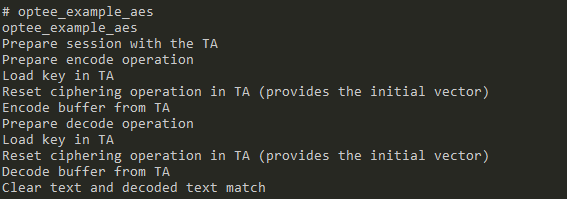
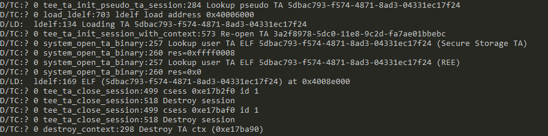

Experiment: secure vision
Sp 2024: this is for p3exp4 (bonus) only
April/2023: updated based on boilerplate code.
We will run a computer vision service in the secure world. This is useful when we want to ensure the confidentiality of the input data and also the integrity of the service code in the face of the untrusted normal world.
Task overview
We will create a TA that accepts encrypted images (sRGB, jpg or png format) submitted from the CA. The TA will run face detection service on the input images; for each detected face on the image, the TA will print the bounding box coordinates in the secure world consoles, and circles the face in the output images.

Design choices
The CA/TA interface
The basic interactions can be learnt from example 1 (helloworld). Passing image data (large chunks, variable length) in/out can be learnt from example 2 (secure data path) . Note: the sdp example uses a CA-allocated shared buffer, which requires the TA to be compiled with the TA_FLAG_SECURE_DATA_PATH flag (discussion); yet this is optional in order to implement the challenge -- the TA can allocate a secure world buffer for storing incoming data.
We have provided the skeleton of TA commands and how CA invokes in the boilerplate code. You can complete the code snippets. You're also welcome to come up with your own command(s) and data paths to implement the same functionality.
Computer vision library for TEE
We need to run code inside the TA for image decoding and face detection via convolutional neural networks (CNNs). On one hand, we do not want to reinvent the wheel. On the other hand, we cannot use popular frameworks such as Tensorflow or nCNN. Why? Optimized for speed and rich features, they are large and have extensive external dependency. Porting them to the secure world will be tedious, if not impossible. Furthermore, we are limited to libraries implemented in C as OPTEE does not have libs and runtimes, e.g. for C++ or Python.
Indeed, we are looking for an "embedded" library that is lightweight, self-contained, and in C. To this end, SOD seems a good choice. It provides simple sample programs and good documentation. The official page of this project is at https://sod.pixlab.io/intro.html.

For those who wish to use the SOD library, we have ported the library to the secure world. The library source is included in the boilerplate that we give to you.
Cryptos
We will choose the encryption/decryption algorithm used by the normal/secure worlds. Consider:
- Symmetric or asymmetric? Two families of crypto schema are at our hand: symmetric and asymmetric. The former uses only one key for both encryption and decryption while the latter uses a public/private key pair: public key for encryption and private key for decryption. The choice of these cryptos lead to different performance overhead.
- Are there existing implementations for the crypto?
- How would we store the crypto key in the secure world?
We recommend AES, for which OPTEE implements APIs. Example code: optee_examples/aes/. The example has both the CA and the TA code. To try out the example.
In the normal world, do:

Secure world console:

To implement your own CA: we will give you Python code that encrypts given images with AES. In this way, your CA only needs to load the encrypted images and send to the secure world for processing.
We give you a tarball including:
- Boilerplate code of TA/CA.
- A Python program for encrypting images and decrypting images
- See its README for details. *
You'll need to implement:
- TA:
ta/cnn_ta.c - CA:
host/main.c - Helper functions for TA/CA if necessary
- Any scripts you need to automate your development and test
Roadmap
There are three commands available in the given code, but only one is complete. It takes unencrypted images and CNN model parameters from the normal and passes them to the secure world. In the secure world, a CNN model in SOD library is built. It detects the faces in input images, draws the circle, and passes the encrypted result out of the secure world.
To achieve the security objective, two additional commands need to be implemented. The first one takes encrypted model parameters, and passes it to the secure world where they are decrypted and saved in the secure storage. This command helps you understand how the encryption and decryption work, and check if your crypto operations are working properly.
The second command takes encrypted images and passes them to the secure world. The secure world creates the CNN model with saved parameters, decrypts images, detect faces, encrypts the circled images, and passes them out to the normal world.
Reason about security
Each design decision you made above is crucial to the security of the system. Consider the following questions:
- With your design of CA/TA interface, what could normal world learn at best? Does this affect the design goal of your system?
- What is the implication of accepting user-input images and run algorithms on them inside secure world? Is the system safe for good by putting the security sensitive code inside secure world?
- With your choice of crypto, what additional assumptions you must make to ensure security? Hints:
- Symmetric encryption uses only one key. Can you expose it to normal world? If you have to do so to encrypt images, what assumption you must make to ensure the images are still confidential?
- How do you store the key(s)? Can you bake them into TA and why?